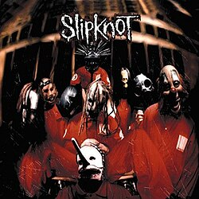

Slipknot es una banda estadounidense de heavy metal y nu metal formada en 1995 en Des Moines, Iowa. Sus integrantes en la actualidad son Corey Taylor, Jim Root, Mick Thomson, Shawn Crahan, Sid Wilson, Alessandro Venturella, Michael Pfaff y Eloy Casagrande. Slipknot es conocida por las máscaras características de cada uno de sus miembros, que cambian conforme han sacado más discografía.
